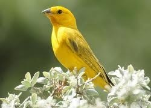

A Pousada Serra Verde é uma exelente opção em hospedagem para quem quer conhecer as belezas de Campos do Jordão
e não abre mão de conforto e ótimos preços. Com exelente localização e fácil acesso, oferece aos seus hóspedes
ótimas acomodações para casais, famílias e grupos. Confira nossos principais atrativos e facilidades:
- Cachoeira com piscina natural
- Minicampo de futebol
- Salão de jogos
- Wi-Fi em todos os chalés
- Estacionamento
- Indicação de guias turísticos
- Aluguel de bicicletas
Veja o que a natureza reservou para nossos hóspedes!
Escute a melodia de nossos pássaros!
